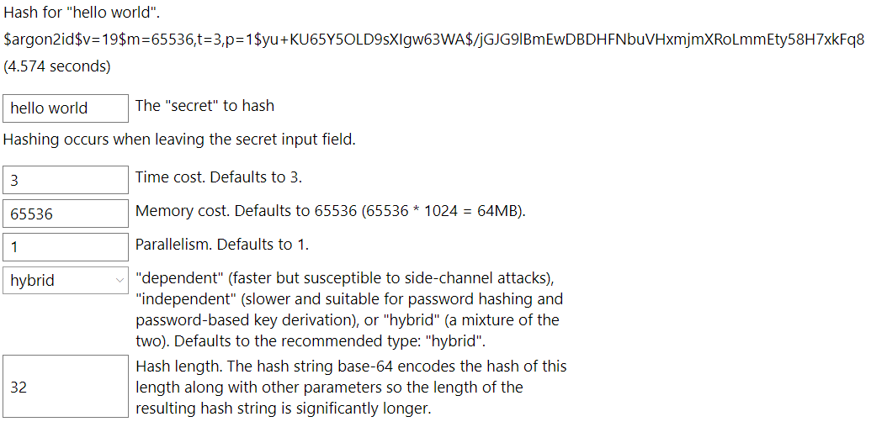

Argon2 With UnoPlatform WebAssembly
You can use this library to calculate Argon2 hashes in the web browser.
With the .Net 6.0 SDK, the Blazor WebAssembly runs slower than
on the host - taking on the order of 4-8 times longer for a default
hash on common hardware. I couldn't get the Uno Platform example to
compile with the Project->PropertyGroup->WasmShellMonoRuntimeExecutionMode
setting to anything other than Interpreter (InterpreterAndAOT and
FullAOT failed to build). This should improve as both dotnet improves and
WebAssembly improves.
Note, unlike the current Blazor, the Uno Plaform says it supports .Net threads (see Threads Support. Please tell me how if you get it to work - I have failed with the page hanging using 1.3.4 and failed to even load the page properly when using 1.4.0-dev.52.
UWP
One of UnoPlatform's output types is for a Universal Windows Application (UWP). I have yet
to figure out out to call VirtualAllocFromApp() which should be available for UWP apps
and should allow protection from writing to cache for SecureArray. So, for now, only
zero-before-free is available with UWP.
Example
This example tries to be a little friendly in that it tells you when it is calculating the hash and disables the controls when it is doing so.
It builds a component that looks like this:

XAML
The WPF XAML for that page looks like:
Warning
It looks like the sample you are looking for does not exist.
XAML Code
The code to do the processing for that XAML takes care to do as much
proccessing in async calls to give the UI a chance to be reactive. Highlighted
is the actual call to Argon2.Hash():
Warning
It looks like the sample you are looking for does not exist.
Example Source
The source for this example can be found at:
(github)TestUno